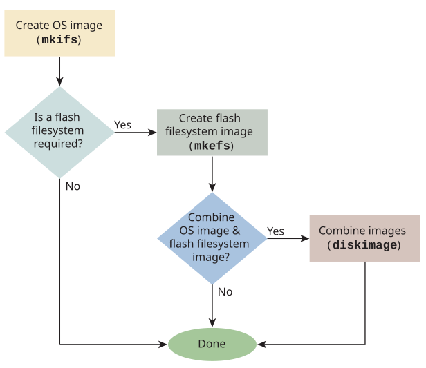

Depending on your system requirements, you will need to transfer different combinations of the IPL, OS image and filesystems to your target.
These combinations may include:

If your target board supports flash devices, you may wish to write the boot image and the flash filesystem
(or the two combined) to the flash devices on the target.
This is required if you want to boot from flash, of course. To combine filesystem images, you can use the
diskimage utility (see
Combining multiple image files
).
During the initial development stages, you'll probably need to write the image into flash using a programmer or a download utility. Later on, when you have a flash filesystem running on your target, you will be able write the image file into a raw flash partition.
If your programmer requires the image file to be in some format other than binary, you can use the mkrec utility to convert the image file format to Motorola S records or Intel hex records (see mkref in the Utilities Reference).